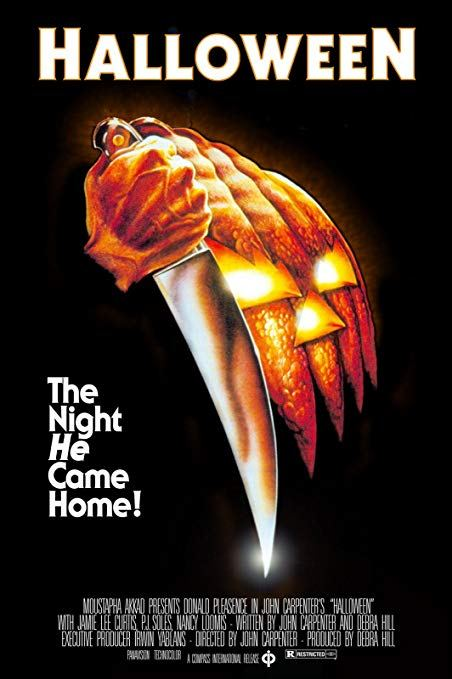

From Outer Space
I was about 4 or 5 years old. I was at my uncle and aunt’s house with my brother, sister and four cousins. With the exception of my youngest cousin, everyone else was older than me and they wanted to watch A Nightmare on Elm Street. I don’t know who thought it was a good idea to let me stay in the room. Freddy Krueger scared the hell out of me! I was petrified to even leave the room to go to the bathroom.
|  | |
|
||
| Halloween | Halloween: H2O | Trick 'R Treat | Black Christmas | Killer Klowns From Outer Space |
 |
 |
 |
 |
 |
| Urban Legends | Ready Or Not | Terrifier | Slumber Party Massacre |
Scream |
Slasher, hands down. Some of these stories could actual happen in real life…which makes them all the scarier.
(In no particular order)
 |
 |
|
| Cherry Falls | Motell Hell | VFW |
In high school, my friend and I went to the movie theater to see The Blair Witch Project. About halfway through the film, I was getting such severe motion sickness from all of the camera movement that I had to keep my eyes closed. I ended up making it to the end and back to my car without incident. However, my friend was not as lucky. As soon as she got into the passenger’s seat and closed the door, she promptly reopened it and threw up all over the pavement. Scarred for life!